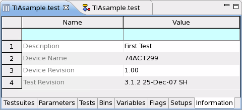

Information page
The information page provides general information about the testflow, which you can use, for example, to edit the application model file accordingly.
On the page, you can edit the following basic information about your testflow:
- Testflow description
- Device name
- Device revision number
- Test revision number

To query test these information you can use GET_TEST_INFO.
Functional changes
- Introduced before SmarTest 6.3.2